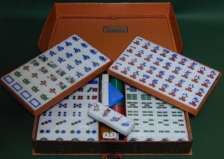
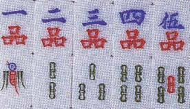

中国では「国」の次に大きい行政単位は「省」。一つの省は、日本より広い。日本でも鹿児島県人と青森県人がまともに話をすると、たぶん言葉が通じない。中国では、それどころではない。省が違うと、国が違うといっていいくらい。そこで多くの中国人は、バイリンガルだ（自国語と共通語（北京語）を話すことができる）。
で、そんな「省」のなかの太平洋側、ちょうど台湾とお向かいの位置に福建省というところがある。これは、その福建省で使用される麻雀牌。そこで分類上、福建牌と呼ばれる。

風牌が真っ青、緑發のグリーンも鮮やかなど、カラフル
and 綺麗であるが、合成樹脂牌なので、そのように色付けしてあるだけ。福建牌の特徴はそんなことではない。見た通り、万子が 〜
〜 ではなく、一品〜九品となっている。
ではなく、一品〜九品となっている。
麻雀は中国のいろいろなゲームと融合取捨して今日の形となった。そのいろいろのゲームの一つに昇官牌という４スート210枚の牌からなりたっている骨牌ゲームがある。その昇官牌に、「品」というスートがある。
昇官牌の技法はつまびらかではないが、基本的には出世ゲームみたいなもの。そして「品」は、宮廷における「九品（きゅうほん）」の位階を表している。すなわち福建牌は、麻雀の古い形を残している牌である。
これは香港で購入した牌であるが、いま云ったように合成樹脂牌。しかし福建牌には約束、つまり「こうなっていること」というポイントがある。もちろん万子が品子であることは最重要。
また一つは、字牌が 


 ではなく、別な字が彫られていること（
ではなく、別な字が彫られていること（ はそのまま）。次が花牌に彫られた文字が、字牌と連動した意味であること。最後が１索が上向きに飛ぶツバメであることである。
はそのまま）。次が花牌に彫られた文字が、字牌と連動した意味であること。最後が１索が上向きに飛ぶツバメであることである。
この樹脂牌は新しいものなので字牌は、そして花牌も春夏秋冬・梅蘭菊竹と、ごく一般的。しかし上向きツバメというという約束は、守られている。
